Associazione di Promozione Sociale
Verso l'Agorà
Una comunità che cresce insieme, valorizzando ogni stagione della vita nel cuore del Salento
Prossimi Appuntamenti
In programma
Il miracolo dell'acqua nel Salento
Incontro con il Prof. Paolo Sansò, geologo dell'Università del Salento.
Chi Siamo
Una nuova visione
della comunità
L'Associazione "Verso l'Agorà" nasce a Castri di Lecce con un progetto ambizioso: trasformare e adattare la comunità all'invecchiamento della popolazione, rendendo gli anziani protagonisti attivi della vita sociale e culturale del territorio salentino.
Attraverso programmi di crescita culturale, civica e di socializzazione intergenerazionale, valorizziamo le competenze, le esperienze e le attitudini di ogni membro della nostra comunità.
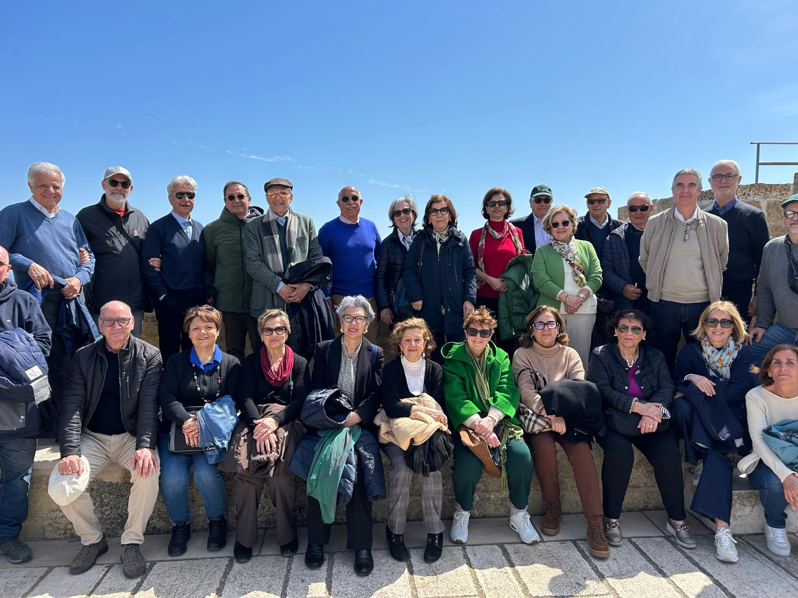
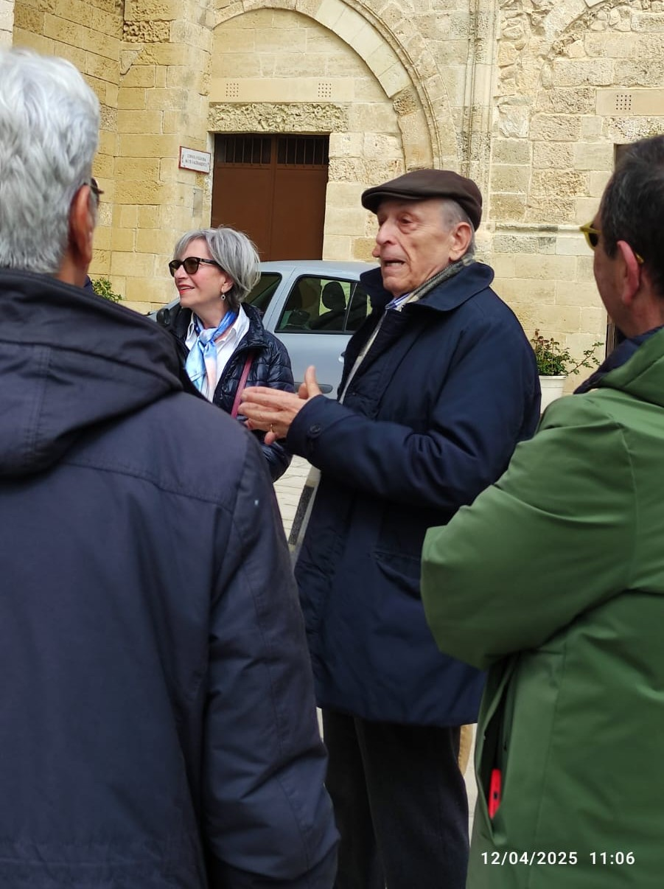
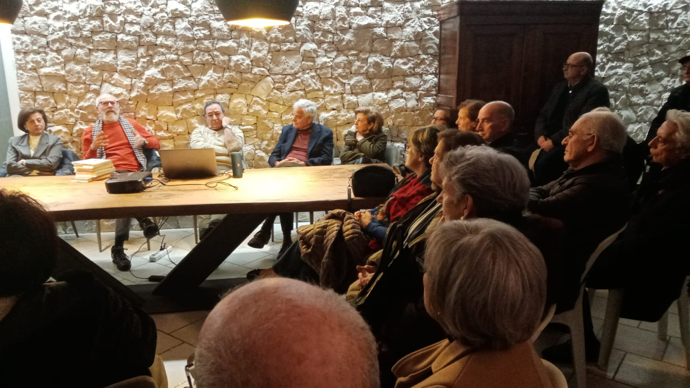
La Nostra Mission
Rendere protagonisti gli anziani delle scelte sociali ed assistenziali che li riguardano, dando loro la possibilità di partecipare alla vita e allo sviluppo della comunità in cui vivono.
Attivare programmi di crescita culturale, civica e di socializzazione intergenerazionale in grado di valorizzare le competenze, le esperienze e le attitudini degli anziani.
Attivare un "Social Housing diffuso" in grado di fornire risposte assistenziali flessibili in base alle condizioni psico-fisiche e di autonomia residua.
La Nostra Vision
Vecchiaia intesa come naturale stagione della vita in grado di offrire nuove opportunità.
Condizione di vita preparata e vissuta insieme a tutta la comunità mantenendo la dignità, il ruolo, le capacità e l'integrità personale.
Mantenimento di una vita di relazione soddisfacente evitando un isolamento basato sull'età, sulle condizioni clinico-assistenziali ed economiche.
Rispetto della libertà e della sensibilità personale evitando sradicamenti e forzate convivenze.
Comunità
Crescere insieme, senza distinzione di età o condizione
Dignità
Rispetto della libertà e della sensibilità personale
Crescita
Valorizzare competenze, esperienze e attitudini
Team
Gianfranco Capone
PresidenteAda Buttazzo
Vice PresidenteAnna Maria Alligri
SegretariaAnna Maria Mazzeo
Tesoriera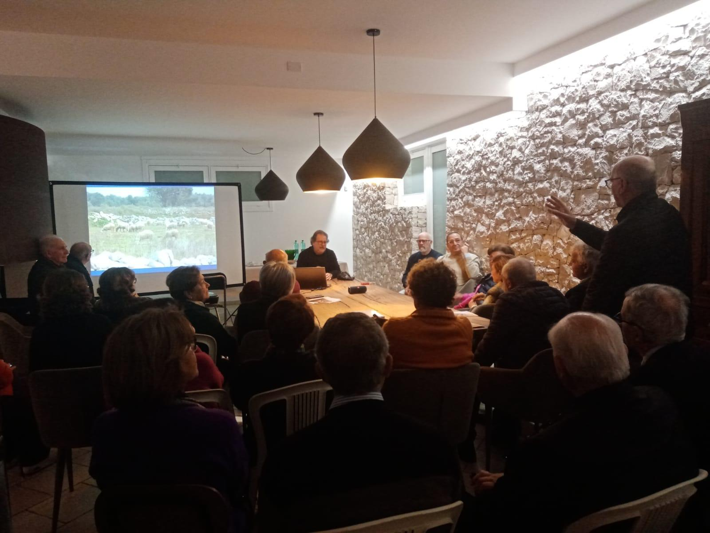
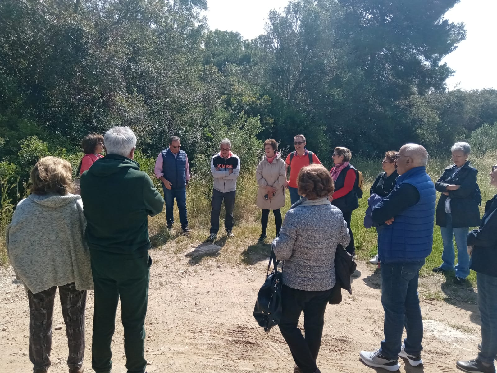
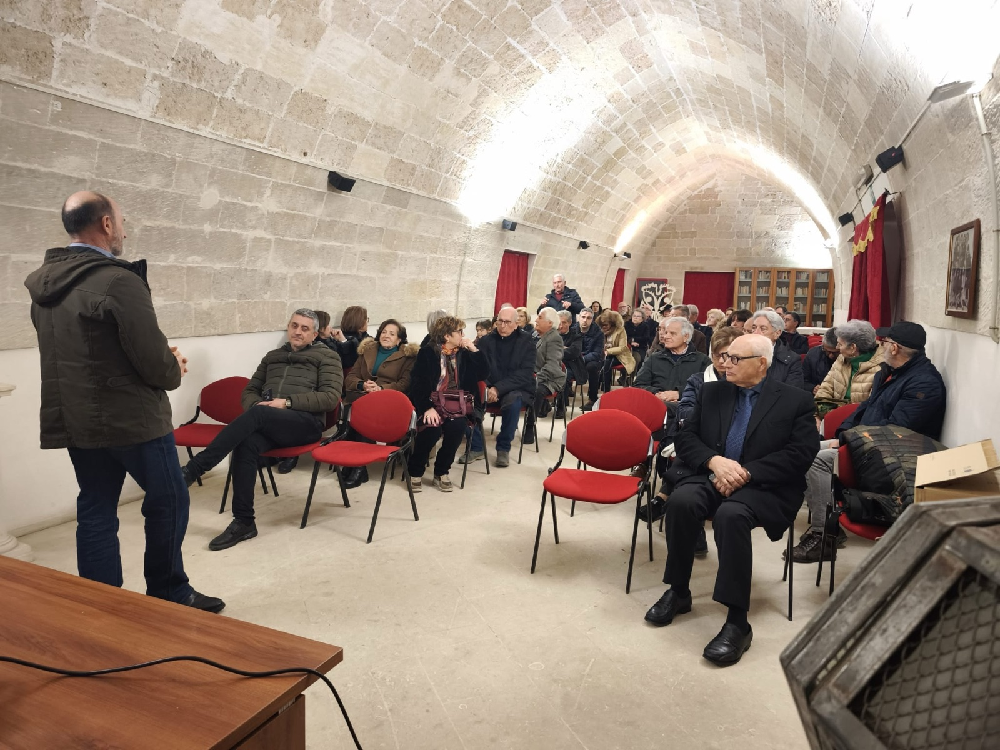
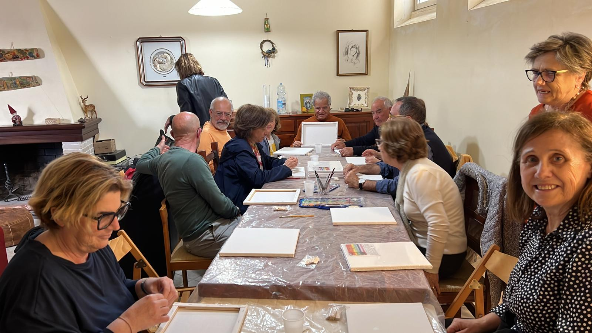
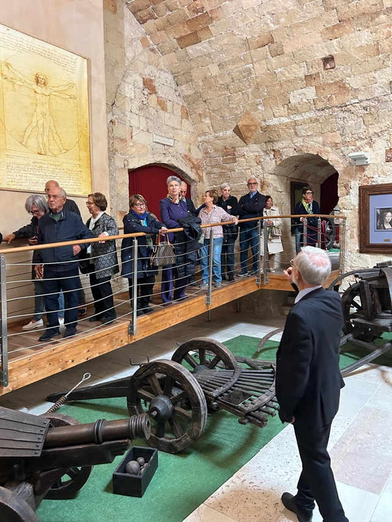
Le Nostre Attività
Percorsi per i soci
Un ricco programma di attività culturali, scientifiche e di benessere pensate per stimolare la curiosità, la socializzazione e il benessere dei nostri soci.
Percorso Storia e Conoscenza del Territorio
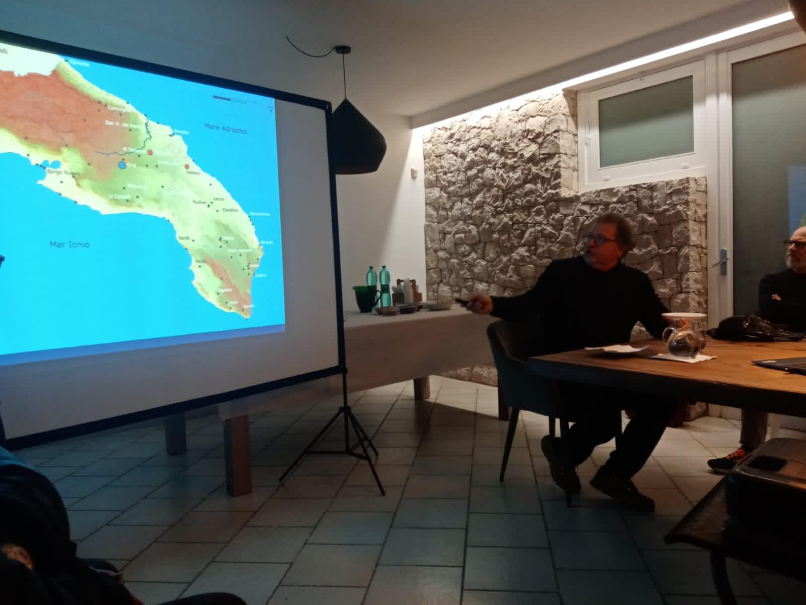
I Messapi
Incontri di archeologia e visite guidate agli scavi e al museo di Castro, alla scoperta della civiltà messapica.
A cura dell'arch. Prof. F. D'Andria e C. NotaroVisite ai Musei
Esperienze culturali alla scoperta del patrimonio artistico e storico del territorio pugliese.
Percorso le Meraviglie della Scienza
Fisica e Astrofisica
Un viaggio affascinante attraverso le leggi dell'universo, dalle particelle alle galassie.
A cura del Dott. Stefano Moramarco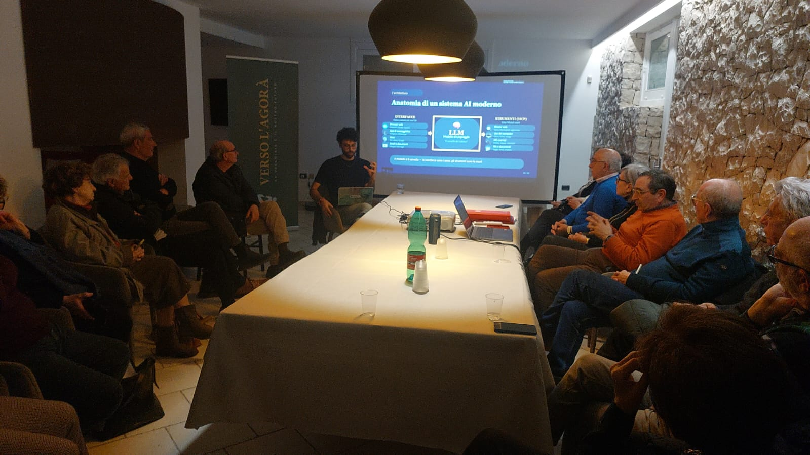
Informatica
Percorsi di familiarizzazione con il mondo digitale, per restare connessi e autonomi.
A cura dell'Ing. Davide CammarotaPercorso Salute e Benessere
Forest Therapy
Incontri conoscitivi sulla terapia forestale, immergendosi nella natura salentina.
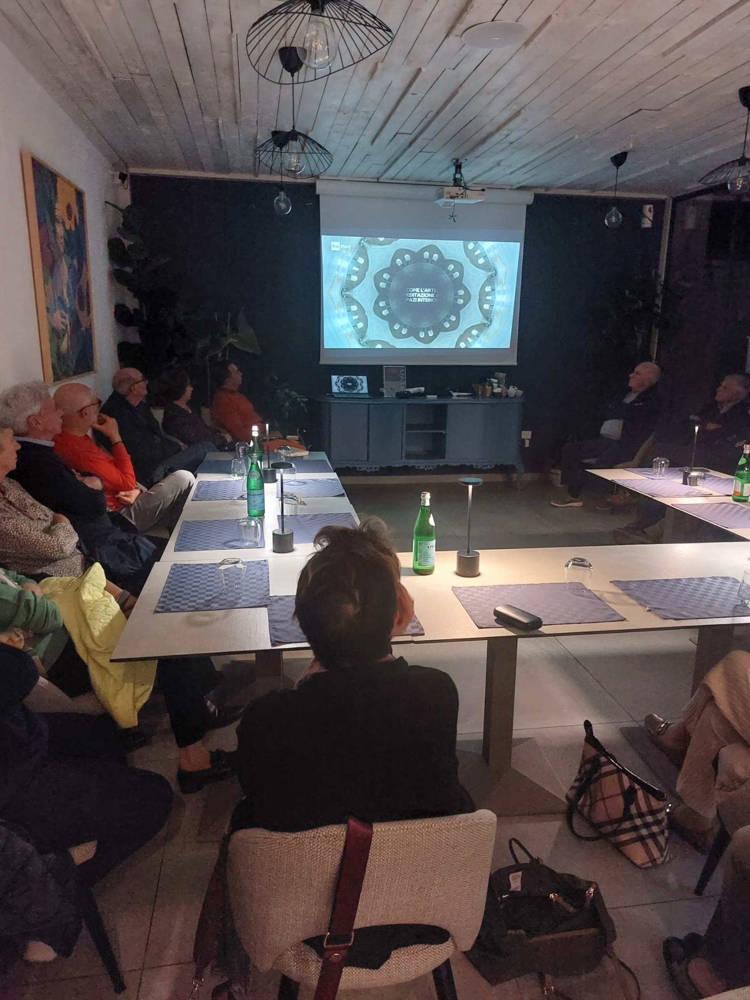
Mindfulness
Un corso dedicato alla consapevolezza e al benessere interiore, per ritrovare equilibrio e serenità.
Eventi Pubblici
Aperti alla cittadinanza
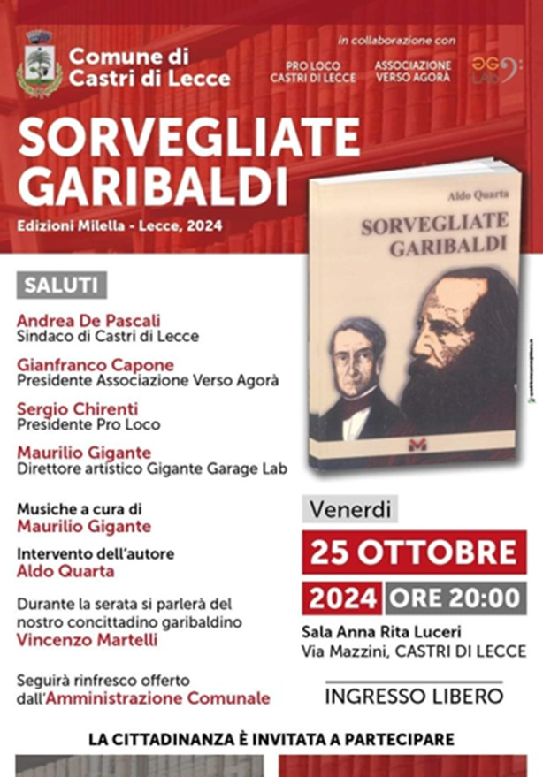
Sorvegliate Garibaldi
Presentazione del libro di Aldo Quarta (Edizioni Milella, 2024). Durante la serata si parlerà del concittadino garibaldino Vincenzo Martelli, con musiche a cura di Maurilio Gigante. In collaborazione con Pro Loco Castri di Lecce e Gigante Garage Lab.
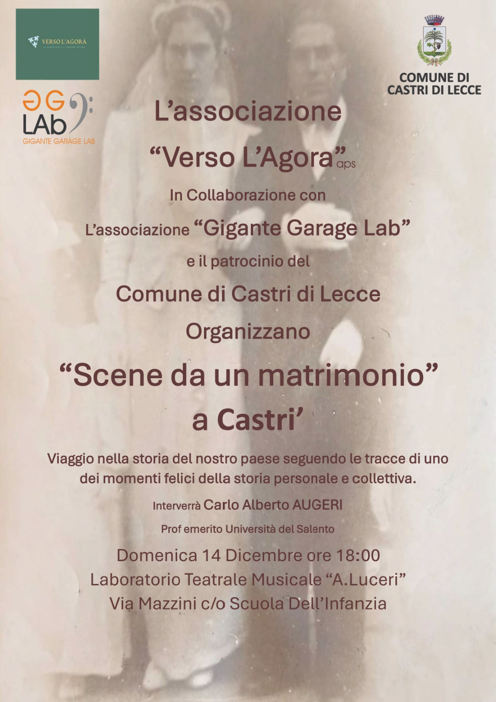
Scene da un Matrimonio a Castri
Un viaggio nella storia del paese seguendo le tracce di uno dei momenti felici della storia personale e collettiva. In collaborazione con "Gigante Garage Lab" e il patrocinio del Comune di Castri di Lecce.
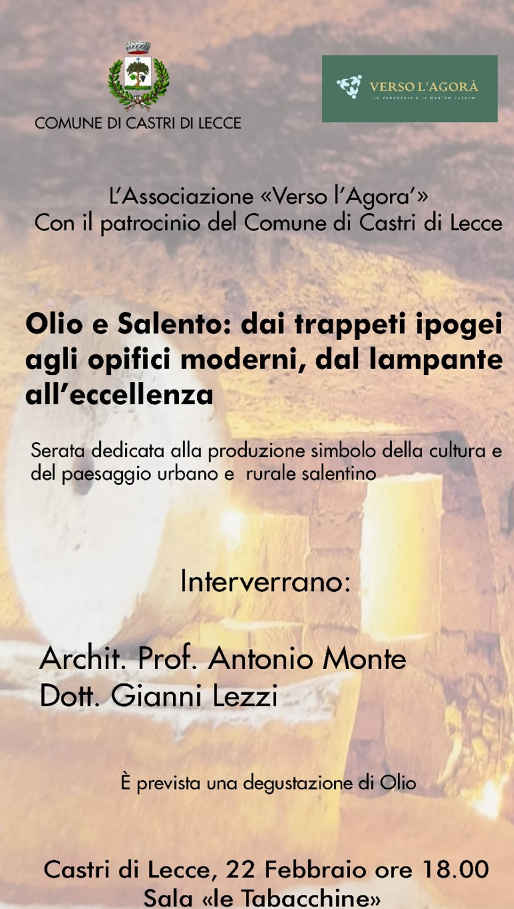
Olio e Salento
Dai trappeti ipogei agli opifici moderni, dal lampante all'eccellenza. Serata dedicata alla produzione simbolo della cultura e del paesaggio urbano e rurale salentino, con degustazione di olio.
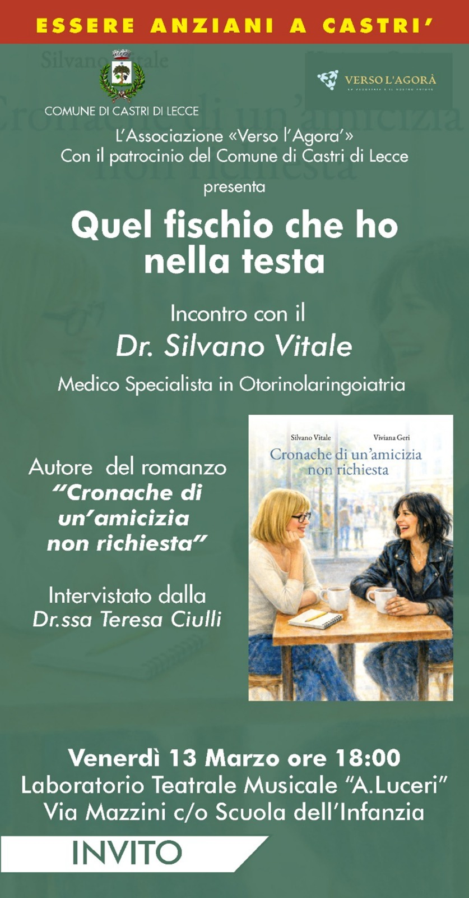
Quel fischio che ho nella testa
Incontro con il Dr. Silvano Vitale, Specialista in Otorinolaringoiatria, e presentazione del suo romanzo "Cronache di un'amicizia non richiesta", intervistato dalla Dott.ssa Teresa Ciulli. Con il patrocinio del Comune di Castri di Lecce.
I Nostri Traguardi
Passi concreti
Protocollo d'Intesa Istituzionale
Sottoscrizione di un protocollo d'intesa tra l'Amministrazione Comunale e l'Associazione "Verso L'Agorà APS", sancendo una collaborazione formale per il benessere della comunità.
Collaborazione con l'Università del Salento
Progettazione e somministrazione, in collaborazione con l'Università del Salento, di un questionario conoscitivo dei bisogni e della condizione psicologica degli anziani della comunità.
Programmazione Culturale
Avvio di un ricco calendario di incontri culturali, scientifici e di benessere destinati ai soci, con il coinvolgimento di esperti e professionisti del territorio.
Eventi Pubblici
Organizzazione di eventi aperti alla cittadinanza per sensibilizzare la comunità sulle tematiche dell'invecchiamento attivo e della solidarietà intergenerazionale.
Costruire con la comunità il futuro
Medio Termine
Ambulatorio di Comunità
Creazione di uno spazio sanitario di prossimità, per garantire assistenza medica accessibile e continuativa a tutta la comunità.
Spazi di Incontro
Individuazione e creazione di luoghi dedicati alla socializzazione, all'incontro intergenerazionale e all'ubicazione dei servizi comunitari.
Lungo Termine
Assistenza Domiciliare Integrata
Individuazione di soggetti pubblici e privati in grado di fornire assistenza domiciliare alla persona, utilizzando telemedicina e controllo da remoto della sicurezza personale e della condizione sanitaria.
Independent & Assisted Living
Soluzioni abitative innovative che combinano autonomia personale con supporto assistenziale flessibile, adattato alle reali condizioni e necessità di ciascuno.
Contatti
Unisciti a noi
L'Agorà è aperta a tutti coloro che condividono la nostra visione di una comunità solidale e inclusiva. Contattaci per scoprire come partecipare alle nostre attività o sostenere i nostri progetti.
Scriviciinfoversoagora@gmail.com